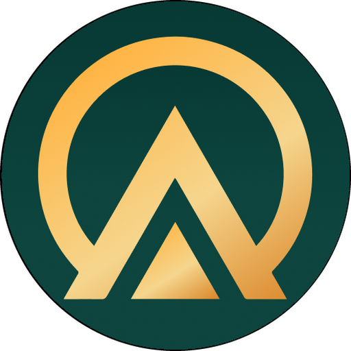

<!doctype html>
<!-- ZeroLink by PUAS: hands-on film, 1080x1920, ~54 s. Vigenco custom film: window.seek(t) draws one frame,
     window.FILM exports duration, bpm, sections and cues. Real ZeroLink app screens (Robolectric screenshots, Indonesian UI)
     with a tap marker and a gentle push-in on each step. Captions: job "lang": "en" (default) or "id". -->
<html lang="en"><head><meta charset="utf-8">
<title>ZeroLink · Hands-on</title>
<link rel="preconnect" href="https://fonts.googleapis.com">
<link rel="preconnect" href="https://fonts.gstatic.com" crossorigin>
<link href="https://fonts.googleapis.com/css2?family=Plus+Jakarta+Sans:wght@400;500;600;700;800&display=block" rel="stylesheet">
<style>
:root{--night:#04201c;--cream:#f2edd5;--muted:#a9b9b3;--gold:#f6b84c;--goldInk:#072b26}
*{box-sizing:border-box;margin:0}
html,body{width:1080px;height:1920px;overflow:hidden;background:var(--night)}
#stage{position:relative;width:1080px;height:1920px;overflow:hidden;font-family:"Plus Jakarta Sans",sans-serif;color:var(--cream);-webkit-font-smoothing:antialiased;
  background:radial-gradient(900px 900px at 50% 30%,rgba(14,96,84,.55),transparent 70%),radial-gradient(800px 700px at 50% 100%,rgba(246,184,76,.14),transparent 70%),var(--night)}
.a{position:absolute}
.cap{left:0;width:1080px;top:100px;text-align:center}
.pill{display:inline-flex;align-items:center;gap:12px;padding:12px 26px;border-radius:999px;background:rgba(246,184,76,.14);color:var(--gold);font:700 28px/1 "Plus Jakarta Sans";letter-spacing:.02em}
.pill b{display:inline-grid;place-items:center;min-width:36px;height:36px;padding:0 6px;border-radius:18px;background:var(--gold);color:var(--goldInk);font-size:22px}
.h{margin-top:24px;font:800 60px/1.12 "Plus Jakarta Sans";letter-spacing:-.03em;padding:0 70px}
.h em{font-style:normal;color:var(--gold)}
#phone{left:196px;top:400px;width:688px;height:1480px;border-radius:78px;background:#0b0f0e;box-shadow:0 60px 120px -30px rgba(0,0,0,.8),inset 0 0 0 3px rgba(242,237,213,.12)}
#scr{left:216px;top:420px;width:648px;height:1440px;border-radius:60px;overflow:hidden;background:#f6f6f2}
#scr img{position:absolute;left:-8px;top:0;width:664px;height:1440px}
.tap{width:120px;height:120px;margin:-60px 0 0 -60px;border-radius:50%;z-index:60}
.full{left:0;width:1080px;top:0;height:1920px;display:flex;flex-direction:column;align-items:center;justify-content:center;text-align:center}
</style></head><body>
<div id="stage">
  <div id="capWrap"></div>
  <div class="a" id="phone"></div>
  <div class="a" id="scr"></div>
  <div class="a full" id="title"></div>
  <div class="a full" id="end"></div>
  <div class="a tap" id="tap"></div>
</div>
<script>
(async function(){try{
const SPEC=window.SPEC||{};const ID=(SPEC.lang||new URLSearchParams(location.search).get('lang'))==='id';
document.documentElement.lang=ID?'id':'en';
// [screen, tap x fraction, tap y fraction (null = no tap), hold seconds, EN caption, ID caption]
const STEPS=[
 ['7-isi-nama-pertama-kali',.77,.569,0,'Enter the name <em>others will see</em>','Isi nama yang <em>terlihat orang lain</em>'],
 ['6-layar-awal',.26,.16,0,'Tap <em>Grup</em> to find or start a group','Ketuk <em>Grup</em> untuk mencari atau membuat grup'],
 ['1-cari-perangkat',.83,.185,0,'Nearby phones appear. Tap <em>Hubungkan</em>','HP sekitar muncul. Ketuk <em>Hubungkan</em>'],
 ['2-grup-dan-chat',.91,.965,1.3,'Hold the button to <em>talk to everyone</em>','Tahan tombol untuk <em>bicara ke semua</em>'],
 ['50-menu-plus',.38,.683,0,'Tap <em>+</em> for group tools: <em>Pengumuman</em>','Ketuk <em>+</em> untuk fitur grup: <em>Pengumuman</em>'],
 ['10-tulis-pengumuman',.79,.58,0,'One announcement reaches <em>every phone</em>','Satu pengumuman sampai ke <em>semua HP</em>'],
 ['38-absen',.2,.73,0,'Roll call: everyone answers <em>in one tap</em>','Absen: semua menjawab <em>sekali ketuk</em>'],
 ['39-hasil-absen',null,null,0,'See who is safe and <em>who hasn’t answered</em>','Lihat siapa aman dan <em>siapa belum menjawab</em>'],
 ['60-menu-darurat',.16,.685,0,'In danger? Open <em>Darurat</em> and tap <em>SOS</em>','Dalam bahaya? Buka <em>Darurat</em>, ketuk <em>SOS</em>'],
 ['3-sos-masuk',.45,.108,0,'SOS rings on every phone, with <em>distance &amp; direction</em>','SOS berbunyi di semua HP, lengkap <em>jarak &amp; arah</em>'],
 ['5-kompas',.47,.76,0,'The compass <em>guides you there</em>','Kompas <em>menuntunmu ke sana</em>'],
 ['16-peta-offline',.78,.965,0,'Save your area once for an <em>offline map</em>','Simpan peta sekitar sekali untuk <em>peta offline</em>'],
 ['33-panduan-bencana-dan-p3k',.25,.163,0,'Disaster &amp; first-aid guide, <em>no internet</em>','Panduan bencana &amp; P3K, <em>tanpa internet</em>'],
];
const L=ID?{title:['Coba langsung','ZeroLink'],sub:'Semua fitur utama dalam satu menit.',step:(n,m)=>`Langsung coba · <b>${n}</b>/${m}`,endH:'Pasang sekarang,',endH2:'sebelum dibutuhkan.',fine:'Gratis · tanpa akun · tanpa iklan · Android 6.0+'}
 :{title:['ZeroLink','hands-on'],sub:'Every key feature in under a minute.',step:(n,m)=>`Hands-on · <b>${n}</b>/${m}`,endH:'Install it now,',endH2:'before you need it.',fine:'Free · no account · no ads · Android 6.0+'};

const $=id=>document.getElementById(id);
const cl=(x,a=0,b=1)=>Math.max(a,Math.min(b,x));
const ease=x=>1-Math.pow(1-cl(x),3);
const io=x=>{x=cl(x);return x<.5?4*x*x*x:1-Math.pow(-2*x+2,3)/2};
const back=x=>{x=cl(x);const c=1.7;return 1+(c+1)*Math.pow(x-1,3)+c*Math.pow(x-1,2)};
const win=(t,a,b,d=.3)=>Math.min(ease((t-a)/d),ease((b-t)/d));
const mk=(html,p)=>{const d=document.createElement('div');d.innerHTML=html.trim();const e=d.firstElementChild;p.appendChild(e);return e;};
const vis=(e,o,tr)=>{e.style.opacity=o.toFixed(3);e.style.visibility=o<=.001?'hidden':'visible';if(tr!==undefined)e.style.transform=tr;};
const zIc=s=>``;

const T0=3.0,STEP=3.6,N=STEPS.length,TEND=T0+N*STEP,DUR=+(TEND+3.8).toFixed(2);
const SX=216,SY=420,SW=648,SH=1440;
const imgs=STEPS.map(s=>mk(``,$('scr')));
const caps=STEPS.map((s,i)=>mk(`<div class="a cap"><span class="pill">${L.step(i+1,N)}</span><div class="h">${ID?s[5]:s[4]}</div></div>`,$('capWrap')));
mk(`<div id="tLogo">${zIc(220)}</div>`,$('title'));
mk(`<div id="tH" style="margin-top:56px;font:800 110px/1.02 'Plus Jakarta Sans';letter-spacing:-.045em">${L.title[0]}<br><span style="color:var(--gold)">${L.title[1]}</span></div>`,$('title'));
mk(`<div id="tS" style="margin-top:34px;font:500 38px/1.3 'Plus Jakarta Sans';color:var(--muted)">${L.sub}</div>`,$('title'));
mk(`<div id="eLogo">${zIc(200)}</div>`,$('end'));
mk(`<div id="eW" style="margin-top:44px;font:800 120px/1 'Plus Jakarta Sans';letter-spacing:-.05em">Zero<span style="color:var(--gold)">Link</span></div>`,$('end'));
mk(`<div id="eH" style="margin-top:30px;font:600 46px/1.25 'Plus Jakarta Sans'">${L.endH}<br><span style="color:var(--gold)">${L.endH2}</span></div>`,$('end'));
mk(`<div id="eU" style="margin-top:56px;padding:26px 54px;border-radius:999px;background:var(--gold);color:var(--goldInk);font:800 44px/1 'Plus Jakarta Sans'">zerolink.web.id</div>`,$('end'));
mk(`<div id="eF" style="margin-top:44px;font:500 30px/1.5 'Plus Jakarta Sans';color:var(--muted)">${L.fine}</div>`,$('end'));

// tap time inside each step, and screen-space tap points
const TAPAT=1.9;
const taps=STEPS.map((s,i)=>s[1]==null?null:{t:T0+i*STEP+TAPAT,hold:s[3],x:s[1]*664-8,y:s[2]*SH});

const cues=[];const cue=(t,k,x)=>cues.push(Object.assign({t:+t.toFixed(3),k},x||{}));
cue(.2,'born');cue(.6,'pop',{n:0});cue(1.1,'shimmer');cue(T0,'whoosh',{v:.7});
STEPS.forEach((s,i)=>{const a=T0+i*STEP;if(i)cue(a,'swap',{n:i});});
taps.forEach(tp=>{if(!tp)return;cue(tp.t,'click');if(tp.hold){cue(tp.t+.05,'drag',{d:tp.hold});cue(tp.t+tp.hold,'release');}});
cue(T0+7*STEP+.4,'check');cue(T0+9*STEP+.1,'alert');cue(T0+9*STEP+.7,'alert');
cue(TEND,'whoosh');cue(TEND+.3,'pop',{n:1});cue(TEND+.9,'pop',{n:2});cue(TEND+1.5,'cta');cue(TEND+2.0,'shimmer');

window.seek=function(t){
 vis($('title'),win(t,0,T0,.35));
 $('tLogo').style.transform=`scale(${(.5+.5*back((t-.2)/.5)).toFixed(4)})`;
 [['tH',.6],['tS',1.1]].forEach(([id,a])=>{const p=ease((t-a)/.4);$(id).style.opacity=p;$(id).style.transform=`translateY(${(1-p)*30}px)`;});
 vis($('end'),ease((t-TEND)/.35));
 $('eLogo').style.transform=`scale(${(.5+.5*back((t-TEND)/.5)).toFixed(4)})`;
 [['eW',.3],['eH',.6],['eU',.9],['eF',1.6]].forEach(([id,a])=>{const p=ease((t-TEND-a)/.4);$(id).style.opacity=p;
   $(id).style.transform=`translateY(${(1-p)*30}px)`+(id==='eU'?` scale(${(1-.05*Math.exp(-(((t-TEND-1.5)/.08)**2))).toFixed(4)})`:'');});
 const po=win(t,T0,TEND,.4);const py=(1-ease((t-T0)/.5))*120+ease((t-TEND+.3)/.4)*60;
 ['phone','scr'].forEach(id=>vis($(id),po,`translateY(${py.toFixed(1)}px)`));
 STEPS.forEach((s,i)=>{
  const a=T0+i*STEP,b=a+STEP;
  const o=i===0?win(t,a-1,b,.3):win(t,a,b+.3,.3);
  const tp=taps[i];const ox=tp?tp.x:SW/2,oy=tp?tp.y:SH*.35;
  const z=1+.07*io((t-a)/(STEP*.8));
  imgs[i].style.transformOrigin=`${ox+8}px ${oy}px`;
  vis(imgs[i],i===N-1?Math.min(o,1):o,`scale(${z.toFixed(4)})`);imgs[i].style.zIndex=i;
  const co=win(t,a,b,.25);vis(caps[i],co,`translateY(${((1-ease((t-a)/.3))*24).toFixed(1)}px)`);caps[i].style.filter=co<1?`blur(${((1-co)*8).toFixed(1)}px)`:'';
 });
 // tap marker, mapped through the step's zoom
 const tap=$('tap');let cur=null;
 taps.forEach((tp,i)=>{if(tp&&t>=tp.t-.5&&t<tp.t+tp.hold+.5)cur=[tp,i];});
 if(cur&&po>.5){const [tp,i]=cur;const a=T0+i*STEP;const z=1+.07*io((t-a)/(STEP*.8));
  const k=t-tp.t,pre=cl((k+.5)/.25),held=tp.hold&&k>=0&&k<tp.hold,after=k-(tp.hold||0);
  tap.style.left=(SX+tp.x)+'px';tap.style.top=(SY+tp.y+py)+'px';
  let s,o;if(k<0){s=1-.25*cl((k+.2)/.2);o=pre*.9;}else if(held){s=.8+.06*Math.sin(k*12);o=.95;}else{s=1+after*1.6;o=.9*(1-cl(after/.5));}
  tap.style.opacity=o.toFixed(3);tap.style.transform=`scale(${s.toFixed(3)})`;
  tap.style.background=k<0?'rgba(242,237,213,.35)':'rgba(246,184,76,.3)';
  tap.style.boxShadow=`0 0 0 ${k<0?4:6}px rgba(246,184,76,${k<0?.9:held?.9:.6*(1-cl(after/.5))})`;
 }else tap.style.opacity=0;
};
window.FILM={type:'custom',width:1080,height:1920,bpm:120,duration:DUR,
  sections:{intro:[0,T0],features:[T0,T0+8*STEP],drop:[T0+8*STEP,T0+10*STEP],outro:[TEND,DUR]},cues:cues.sort((a,b)=>a.t-b.t)};
await document.fonts.ready;
await Promise.all([...document.images].map(im=>im.complete?0:new Promise(r=>{im.onload=im.onerror=r;})));
window.seek(0);window.READY=true;
}catch(err){window.FILM_ERROR=String(err&&err.stack||err);}})();
</script></body></html>
